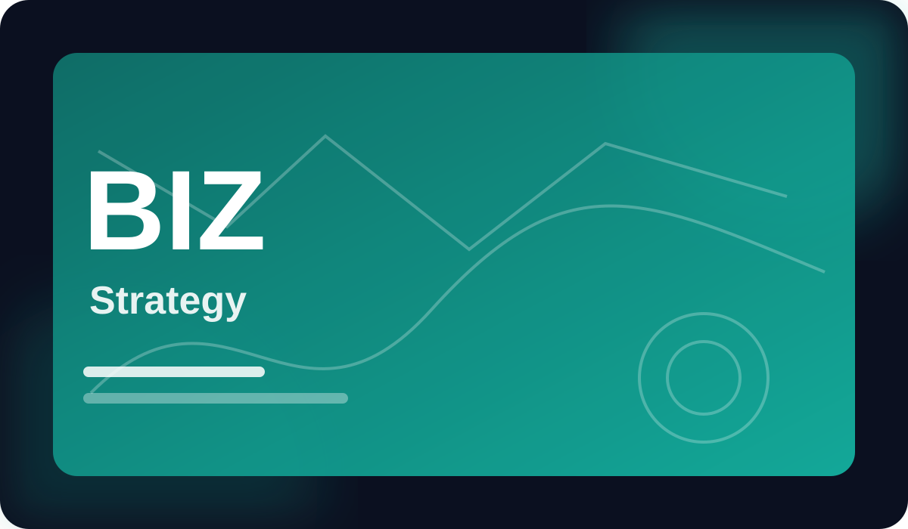

Intermediate
Business Strategy for Digital Products
Use positioning, customer research, prioritization, and metrics to shape stronger digital products.
(7.3k learners)Updated September 2026
Created by Noah Kim

What you will learn
A practical path from concept to confidence.
✓ Apply the core ideas through guided exercises.
✓ Build a portfolio-ready final project.
✓ Use proven workflows instead of memorizing isolated facts.
✓ Check understanding with quizzes and reflection prompts.
Course curriculum
31 lessons • 11 hours total
1. Start here4 lessons
▷ 1. Start here — lesson 16 min▷ 2. Start here — lesson 27 min▷ 3. Start here — lesson 38 min2. Core concepts8 lessons
▷ 1. Core concepts — lesson 16 min▷ 2. Core concepts — lesson 27 min▷ 3. Core concepts — lesson 38 min3. Guided practice11 lessons
▷ 1. Guided practice — lesson 16 min▷ 2. Guided practice — lesson 27 min▷ 3. Guided practice — lesson 38 min4. Build the project9 lessons
▷ 1. Build the project — lesson 16 min▷ 2. Build the project — lesson 27 min▷ 3. Build the project — lesson 38 min5. Review & next steps5 lessons
▷ 1. Review & next steps — lesson 16 min▷ 2. Review & next steps — lesson 27 min▷ 3. Review & next steps — lesson 38 minMeet your instructor
Noah Kim
Educator • Practitioner • Course creator
Noah Kim teaches through clear models, worked examples, and projects designed to make each concept useful beyond the lesson.